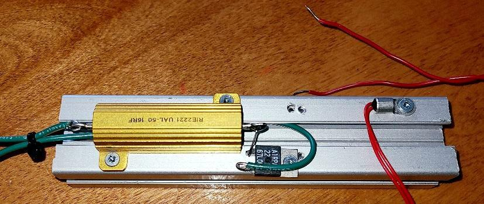
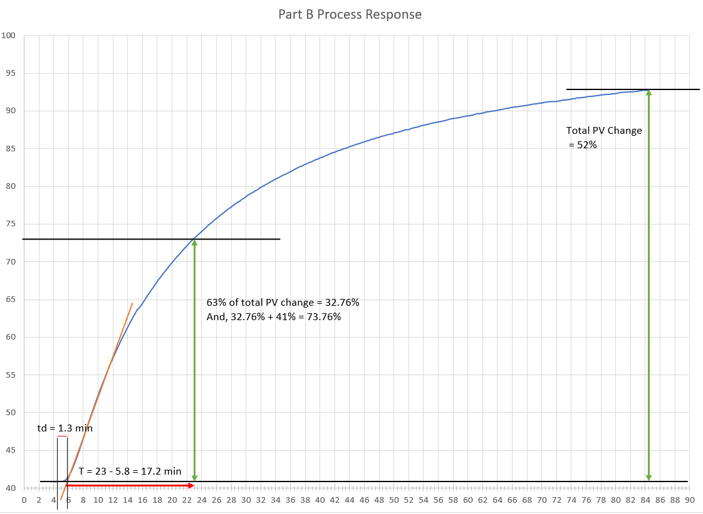
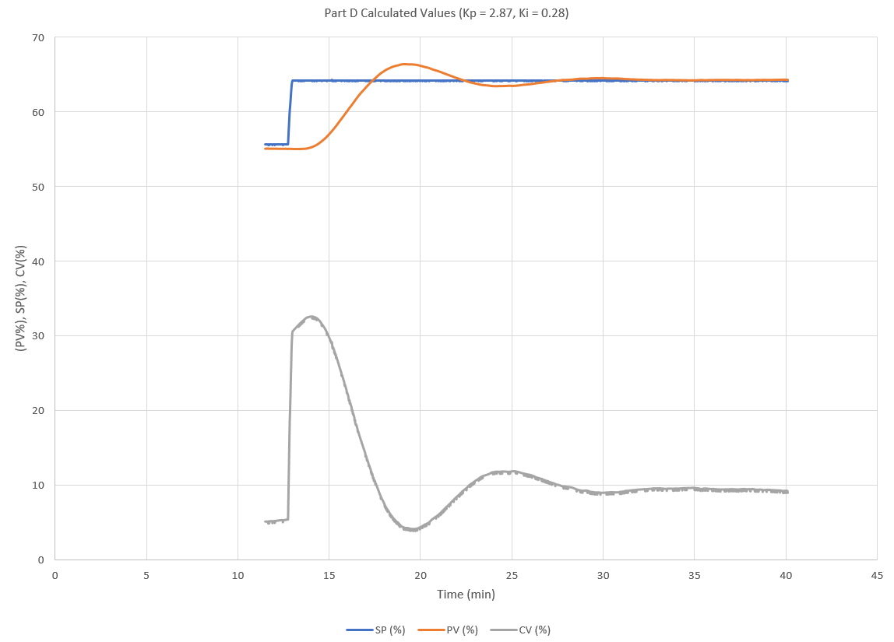

Project Case Study · Apr 2026
Closed-Loop PID Temperature Control: IMC Tuning
A small heater that holds whatever temperature you dial in. I built the circuit, measured how the heater actually behaves, then tuned a controller to bring it to a target quickly and hold it there without much fuss. An Arduino does the thinking, reading a thermistor and adjusting heater power many times a second.

The idea
The goal is easy to say and surprisingly fiddly to get right: keep a heater at a set temperature. You pick a target with a knob, and the controller decides how hard to drive the heater so the measured temperature lands on that target and stays there. The Arduino reads the temperature from a thermistor, compares it to your target, and sets heater power through a small MOSFET driver board that switches the supply on and off quickly to control the average power.
Getting to know the heater
Before tuning anything, I needed to see how the heater actually responds. With the block sitting under a plastic bin to keep drafts off the sensor, I bumped the power up by about 20% and recorded the temperature climbing until it leveled off. That gives the S-shaped curve below. Reading it tells me three useful things: how much the temperature moves for a given amount of power, how long it waits before reacting, and how slow it is overall.

Why a method beats guessing
To show why the measuring matters, I first tried plain proportional control. With a gentle setting the temperature got close but always parked a few percent short of the target. With an aggressive setting it shot past and oscillated for a long time before settling. Neither is good, and that is exactly the gap a proper tuning method fills.
Tuning it properly
Using the numbers from the reaction curve, I calculated a starting point with the IMC method, which is basically a recipe that turns those measurements straight into controller settings. Then I tested and adjusted one value at a time. The first attempt sagged on the way up, the next overshot, and splitting the difference landed it. The final response rises cleanly to the target with only about a 2% overshoot, then holds steady, with the heater easing back to just enough power to keep the temperature there.

What this shows
The whole point was to do it the way it is done on real equipment: measure the process first, work out a sensible starting point, then refine by watching how it actually behaves. It is a small heater on a bench, but the workflow is the same one used to tune loops in a plant.